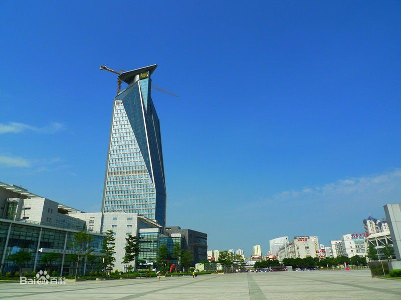
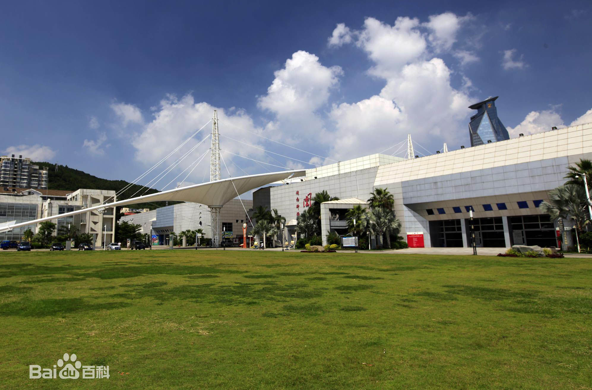
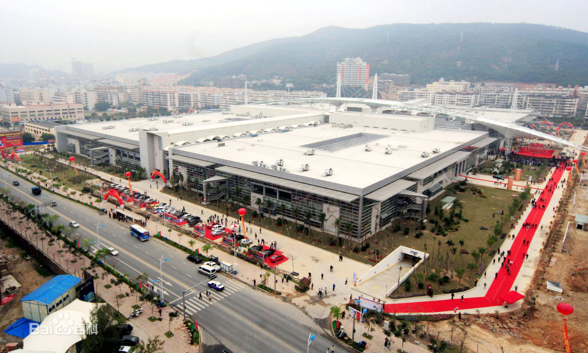

厦门文化艺术中心位于厦门市思明区体育路95号，包括以图书馆、博物馆、艺术馆、科技馆组成的主体建筑以及东西两广场、电影城、演艺中心、会议报告中心、游客服务中心等配套设施，是一个集文化、旅游、休闲于一体的大型文化公建设施群。它是厦门有史以来最大的文化设施项目，也是市委、市政府为民办实事的最大文化设施项目。
图书馆
建筑面积近2.57万平方米，馆藏设计300万册，阅览座位1560个，网络结点1450个。是我市公共图书馆中心馆，也是东南沿海以台侨信息为特色的文献信息资源中心。拥有上、下两层各近万平方米的“藏、借、阅一体化”开放式阅览空间，是国内较具特色的综合性公共图书馆。
科技馆
建筑面积2.1万平方米左右，是我市建设“教育之城、科技之城、艺术之城”三城建设的重点项目和展示窗口。科技馆拥有全省惟一的4D动感影院。观众可以全方位体验影院带来的视觉、听觉和触觉等多方面感受。科技馆是几个场馆中惟一对外售票的，已于今年春节期间全面开放。
馆外十字文化街
艺术中心除了五大馆外，还有东、西两广场和十字文化街等三处室外场地。十字文化街连接图书馆和艺术馆，南北向长330米，东西向长200米，这里是“2007文化艺术活动月”的主要阵地。开馆当天，十字街上有鼓浪屿街头艺人的乐队表演，有草编绝技、面人张、提线木偶、布袋木偶等传统绝技表演；台湾系列水果布丁在这里大展示，与厦门名优特色风味食品魅力大比拼，让你一次吃个够；工艺精品竞拍活动不容错过，以一两元的最低价起拍，由出价最高者赢得，目的在于吸引广大市民参与现场互动。此外还有汽车展示，儿童智力图书、玩具展示等等。
博物馆
建筑面积2.53万平方米左右，分为基本陈列、专题陈列和特展陈列三大部分。首期将建设并开放“厦门历史”陈列和“闽台古石雕大观”陈列。以后还将开放闽台民俗和中国民族民间乐器陈列，并建钢琴博物馆和风琴馆系列，打造厦门音乐博览游的品牌，在全国博物馆界独树一帜。
闽台古石雕大观”是我省最大的石雕文化艺术专题陈列。将展出从1000多件馆藏石雕中精挑细选出来的300多件石雕文物，彰显闽南石文化的无穷魅力。
同时，从北京白塔寺远道而来的100尊藏传佛教金铜造像也将在博物馆新馆惊艳亮相。这些佛像都是国家级文物，是白塔寺珍藏的无价之宝。其中一尊千手千眼观音是国家一级文物、稀世珍品。
专家团将在馆内坐镇，免费为市民鉴定文物。
文化馆
文化馆建筑面积约8000平方米，有规模超强的演艺中心，包括500座、300座和200座的演出场所，将成为全市群众文化艺术创作、指导、培训中心和非物质文化遗产保护工作中心。这些艺术培训项目共分为三大类。老年大学艺术培训包括民间舞蹈、模特、电钢琴、古筝、合唱、视唱练耳与基础乐理；少儿艺术培训有舞蹈、钢琴、二胡、手风琴、古筝、电钢琴、美术基础、合唱、视唱练耳与基础乐理；还有成人艺术、健身培训，分为舞蹈、合唱、戏剧影视、瑜伽、马妮形体梳理、国标舞、动漫美术等项目。
美术馆
美术馆气势恢弘，面积近4000平方米，挑高9.6米的大型现代艺术展厅是我国目前最大的专业艺术展厅。美术馆以现代艺术收藏、研究、演出、展示为特色，重点收藏和展览当代艺术作品、闽籍世界大师的现代雕塑艺术作品和厦门美术书法创作强项漆画、刻字艺术等新兴艺术作品。
 330445074@qq.com
330445074@qq.com 12345
12345